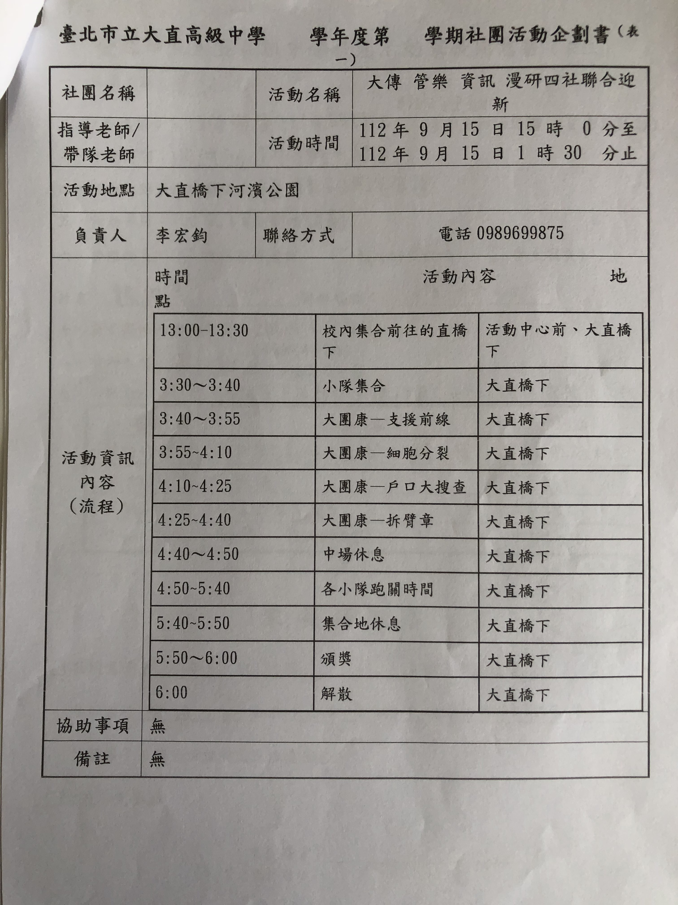
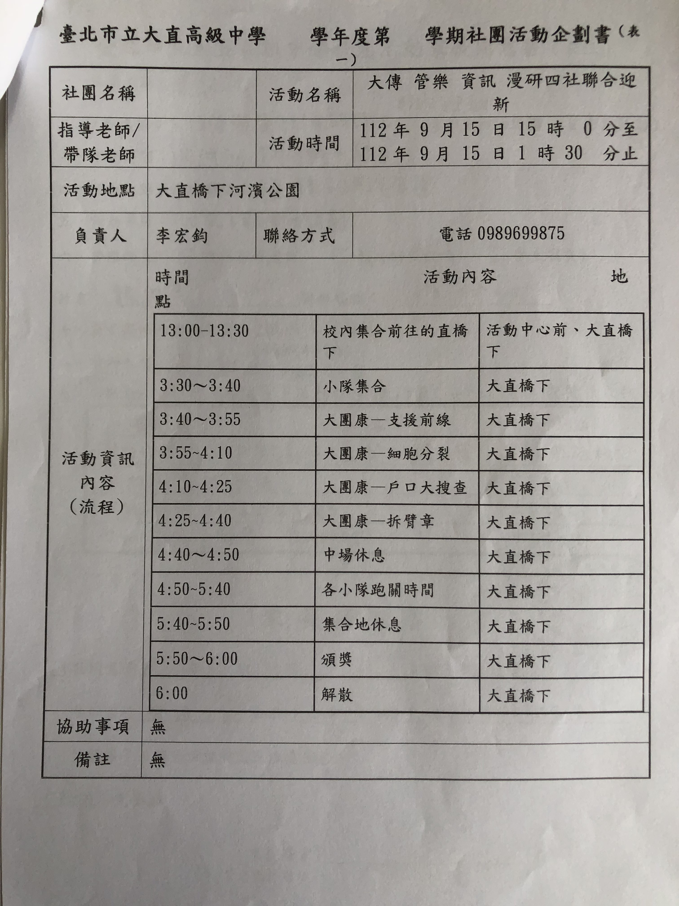
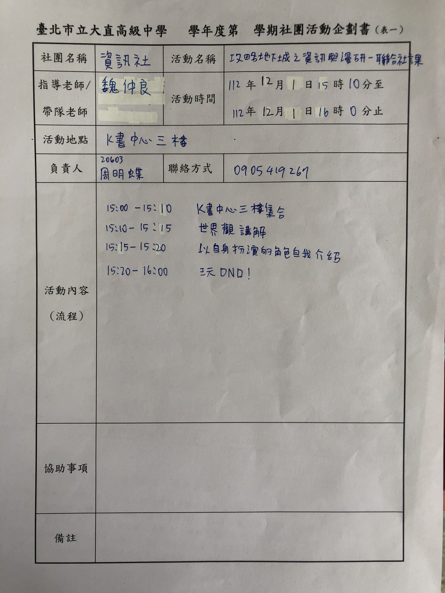
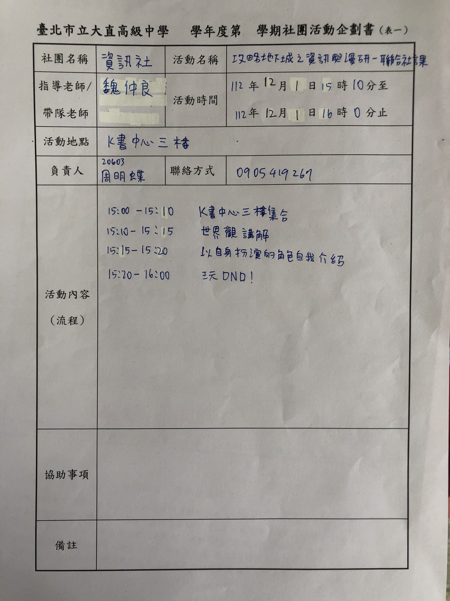

四社迎新
 

.jpg)
.jpg)
.jpg)
很感謝一起合作的另外三個社團以及負責處理相關事項的同學，其實在舉辦這些活動的流程中，我非常擔心資訊社的社員們。
在我個人的印象中，有一部分的同學可能沒有這麼擅長和不熟的人交際(包括我自己)，在一開始，其實很多高一社員想參加的意願並沒有很高，活動進行時，雖然有些資訊社社員事先離開了聯迎活動，但也有部分同學因此交到了新朋友，我們舉辦這場活動的目的是讓高一的大家能夠增進彼此的關係並互相認識，如果要我為這場活動評個分的話，我認為我們大概有達成五成的分數吧。
不過，我自己認為在這次收穫最大的可能不是高一們，而是我們這些高二幹部。當初因為幹部們彼此都不太熟，我其實並不清楚大家心裡是怎麼想的，直到某次要去和別社一起場勘的時候，幾位同學有表現出焦慮的心情，擔心自己可能會做得不好，我才知道原來執行很多事情前，考慮每個人的想法非常重要。我很感謝那些願意跨出舒適圈並面對新挑戰的同學們，謝謝大家願意幫忙完成這些任務。
這次的社課跟社團會議都比較特殊些，因為這一整周我們資訊都在忙著準備聯合迎新，說起聯合迎新，就要從更久遠的暑假開始了。
那時是暑假各位最悠閒的一段時間，大家都沒有什麼事，可以全心投入於社團中，共同訂製社服、找到聯合迎新的社團，甚至是多次的社團會議，都是在那個時候，從漫研開始，到大傳到管樂，我們一開始完全毫無頭緒，接著由漫延社社長組織起DC的討論串，分好組別選出小組長，選出活動討論場地想好獎懲，最後寫企劃書、發家同，分配好關主及隊輔，直到實際進行迎新，我們才發現諸多問題是我們沒預想到。
我們整個流程是從兩個大團康開始，支援前線跟保護VIP，基本上都是需要非常投入的遊戲，不知道是否因為這樣，很多人在遊戲最初沒有展現出熱情，甚至有資訊社的社員覺得無法融入而提早離開，在這之中，我認為讓他們投入到遊戲中是最重要的流程，接下來玩才會順利，隊輔與小隊員的互動和同伴之間的熟悉與否，也會對他們的遊戲體驗造成很大的影響。
其中的支援前線的問題是它根本不該放在大團康，這本來就是很吃資源的項目，自身沒有的物品向他人借也是時常發生的事，故當它成為大團康時，只是在比誰的背包比較多東西，而非蒐集能力及向他人搭話等能力。
保護VIP我應該考慮到內向的隊員情況，這類需要大量肢體接觸的遊戲，好玩是可以到瘋了似的，同時默默縮在一角的成員也不在少數，至少就有投入的成員反映，這算是還蠻成功的項目，我應該之後還是會放類似的項目上去。
再下來，是四個跑關遊戲，上課不專心、跳跳tempo、你說我猜、搶水杯，分別來講一下好了，因為我是三小的隊輔，我就單看我們找個小隊的情況及該關卡的問題去做討論。
我們第一個是在玩搶水杯，照理來說，這應該是個很嗨，玩得一身濕的關卡，可是他們好像真的比較害羞內向，瘋狂的題目變成友好的相互禮讓，快樂的結仇他們也不肯，潑水變成洗鞋子洗手，或許我們當初該設個沒潑到臉要重潑的機制，像是保護VIP也要設個一分鐘內沒搶到一個人的臂章，就自動少掉一個自己的臂章機制。
第二個是你說我猜，其實這個遊戲我在一開始就有所顧慮，畢竟類似的你畫我猜，在資訊設第一次社課就有了慘烈的教訓，畢竟如果底下的人不敢講，或是怕答錯等，屆時台下將會是一片死寂，同時這對於台上的同學壓力也有點過大，在他們完全熟識前，還是不要放這類遊戲比較好。
第三個是每場迎新一定會有的跳跳tempo，當我在還是高一時，也同樣對這個遊戲多有不滿，直到現在還是不太能接受這類的遊戲，這對聽力不好的人類極為不友善，關主口齒不清和聲音過小也會造成很大的麻煩，我們在這關前面幾組題目，基本都在提出問題中度過，在空曠的地方根本不適合這類需要清楚聲音的遊戲。
第四個遊戲乍看下沒什麼問題，但我們優秀的三小隊員立刻意識到一件事，指著紙盤內的蝦餅，問這放了多久，答案是一個多小時，乾掉的土司、受潮的蝦餅及化掉的巧克力我吃掉了半數以上，除了食安問題我認為這個遊戲本身還挺有趣的，尤其是這作為我們最後一個遊戲，大家都有一定程度的熟悉，搞怪和打趣還挺多的。
所有遊戲中我最感可惜的是搶水杯項目，因為這在最後，我們幾位幹部玩其實達到的效果真的很不錯，當中我最喜愛的一段應該是我特別出的假假題，從兩兩互動到最後戲劇性的搶到杯子，大抵是我在整個迎新中笑得最快樂的時候。
而遇到最嚴重的狀況是我這個小隊，唯一的資訊社組員，因為無法融入而離開，造成我很大的挫折，但前任社長又有來找我們聊天，我最先提到的也是這件事，畢竟我們這組也算是六個小隊中最歡樂的一組，氣氛也不算太糟糕，我不知道我該改正哪裡，也不知道應該怎麼做才能避免這個狀況發生，但學長有另一方面的見解，是站在主辦方的立場來看，他認為升上高中就應該為自己的行為負責，同時這並非我們三言兩語就能勸得回來的，順勢而為便可。
在實際執行迎新，也就是社課前，我們同樣開了幹部會議，這次著眼點又回到社員身上，兩兩討論困難的問題及實作問題再次被拿出來討論，最後討論了一圈，結果又回到如何讓他們彼此熟識上，關於這點學長同樣也給出建議，課後留下來進行程式為主軸相關遊戲，給些物質或遊戲誘惑等，可是如果真的能夠成功，有人要補習之類的呢？光是社課結束就無法聚齊幹部，更不用想有多少人會參加了，社課後準備的項目所需相比社課所需心思應當不相上下，費時費力。
當初我是怎麼被推上主辦的位置呢 好問題 我只記得從那時開始一切都變忙碌了 從每個組別的人員配置到活動需要的物品我似乎是每個都看過一遍了 雖說我常常被認為沒有在做事 但實際上光是討論可行性以及跟其他人員溝通 還有確認高一二的參加就快把我的時間消耗殆盡 而且活動當天我還因為服務隊的工作因素隨高一上山而無法及時回到學校 真的很感謝當初那些人的幫助 而在結束後的慶功宴也讓我們感覺到舉辦這次活動真的有其價值意義 不管是在交際方面或是帶活動的經驗 都是難得可貴的
施工中...
施工中...
施工中...
DND
 

.jpg)
.jpg)
這次的活動有不少的問題發生，包含我們舉辦活動的場地因為學校舉行補考而無法使用、高一同學參與意願不高、未事先檢查需使用的裝備(角色卡)等等。
我時常會思考一個問題:究竟該如何提升大家參與活動的意願呢? 畢竟每個人的個性都不同，我無法去改變抑或要求大家該以什麼態度面對活動，最後想到的辦法只有讓他們自行決定自己該做些什麼事，其實到目前為止我依舊對於該如何面對這些問題感到困惑，或許我還有很大的進步空間吧。
今天的內容有點豐富，畢竟周會課我們社長上台報告後，下結社課緊接的就是與漫研社小說組聯合的DND社課，先從上機考的報告講起好了。
上機考我們早從10月就開始準備了，我自認為我們對社團的努力不比其他社團來得少，更何況還舉辦了大大小小的活動、積極找尋讓社員感興趣的方法授課，只不過很多的細節上都沒有處裡很好，像這次的報告也是，準備了很久、改進了課堂，可是關於宣傳方面還是一如社博那次糟糕。
關於這點我只認為大概是因為我們撥給宣傳的準備時間太少，連講稿都來不及打好，更後來報告人員從三人削減到一人，導致我們社長必須背負的責任多了很多，只剩她一個人，沒有排練過、沒有人告訴她聲音應該多大、怎樣的語速才清楚又不會過於緩慢，所以在我看來這場宣傳是失敗的，我坐在後排完全聽不到講話內容，聲音又糊又小，希望下次有機會能夠排過或是至少可以一起上台。
接下來的社課是與漫研社聯合的社課，我認為最糟糕的是當天的社團教室，也就是K3已經有人使用，事前沒有任何通知，當下也找不到可以容納六十幾個人的社團教室，我們一群人真正找到一間可以使用的場地已經過了十三點三十，再加上桌椅佈置、排擺座位安頓下來時是十三點四十，這還不是最嚴重的，點名發現有人不見，讓兩個人去找所以我們社團人員直接減三，大多數社員從頭到尾都窩在一旁滑手機，最後令我無法理解的是關於漫研社小說組的人既然要玩為什麼沒有先建好角？
當場混亂到我搞不清楚手機到底誰是誰的，因為很多人沒有帳號，就一兩個人共用一台手機，到後來是直接跟沒有玩Ｄ&D的幹部借手機來用，其實我思考到現在還是不知道這到底是哪方的過失？聽聞小說組有要玩D&D跑來參一腳，結果造成混亂的且事先沒有再次提醒小說組成員應該車卡的我們，還是對聯合社課不算太上心的小說組人員？
不過事實就是擺在眼前，我們沒有好好應對沒有教室的事情，小說組的成員沒有角色卡，以及大多數的人對規則不清楚等，都是我們沒有事先預想到的問題，我認為如果還有下次的聯合社課或是活動，我們必須像聯合迎新那次一樣，規定好各自的職責，也就是規定好誰是主要負責人，我記得這一點我在資訊社的第一堂社課檢討也寫過類似的話，可是到現在都尚未改善，所以我不禁開始思考，這些社團的檢討會議與紀錄是否真的對我們社團的在精進有所幫助？如果完全沒有的話，根本不需要檢討，我們每周花時間開會也是，若失去檢討的功能的話，或許也沒有那麼重要了。
結束後雖然遊戲進行到後半部分不算太糟糕，因為去掉一大部分參與度不高的成員和完全沒進入狀況只想玩手機的人，進行得還算順利，不過很奇妙的是在這當中的問題其實也不少，關於我借幹部的手機讓社員使用他們的角色卡這件事，對於我所認為理所當然的事情造成了衝擊，因為在我們一群人之中並不是所有人都願意將手機借出的，對我來說在這堂社課中，最重要的是確保流程正常運行、搞定突發狀況，所以其實我很不能理解不是很想將手機借出的幹部。
所以我很認真的思考過原因，不知道是不是我先入為主，但在我眼裡看來我們辦活動、準備一堆有趣的事情及費心費力為了社團奉獻時間精力，卻只換來失敗與挫折，成功了也不會因此感到歡樂，只會有「終於結束了」這樣的想法，我認為這樣大概過完上學期我們就不會有動力持去前進了，我們曾經討論過對於社員的獎勵制度，那對於幹部的呢？如果沒有正向回饋給各位，那大家對於各個活動及社課的投入度相對就不會那麼高，每位幹部對社團的熱枕都不斷地衰竭，我們只會越來越糟糕。
好問題 那天我在幹嘛來著 一開始去找翹課的 接著把手機借給沒有創角色的 說真的對於這個活動感覺推的太急了 沒有時間做準備 而且當天也多出了一堆預想外的災難 像是需要臨時更換教室...想玩的人數突然增多 等等等等 說真的等到安頓下來時間已所剩不多 加上一些社員其實是不想參加的 所以都在後面拒絕社交 (.w.)這次活動有點失敗阿...
施工中...
施工中...
施工中...